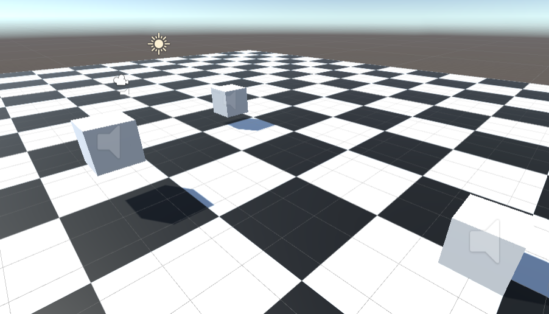
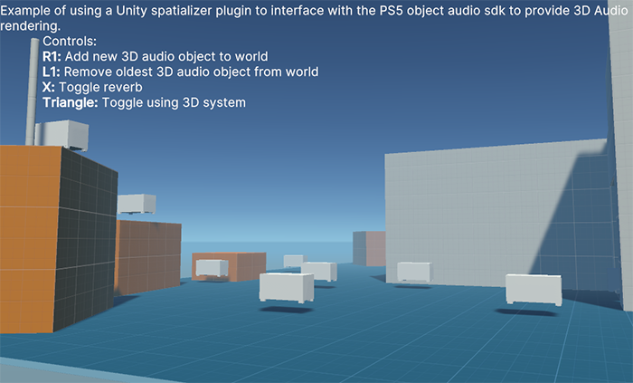

Use the sample projects
The below section describes how to use and navigate the provided PlayStation 5 (PS5) spatializer sample projects. You can run these samples in the Editor, but to hear the full effect of spatialized audio, you must run them on a PS5.
Access the sample projects
The Spatializer plug-in comes with a sample project containing two scenes for you to explore. After installing the package, import the sample from the Package Manager. You can then access the sample projects from the Assets window under Samples.
PS5 input system package
You must install the latest PS5 input system package to use the sample. This package adds support for the DualSense gamepad.
Sample projects
Basic Sample
The basic sample project allows you to navigate a scene from a first-person view (FPV). The scene contains three game objects that stream different audio files on a loop; a piece of music, a speech, and the sound of a helicopter. You can hear how the audio behaves inside this 3D environment as you move around, and see how a basic scene is set up.

One Shot
The one-shot sample shows how to use spatialized audio with the audio source playoneshot method. Much like the basic sample project, the one-shot sample project lets you navigate a 3D space. It lets you spawn and destroy 3D audio objects on demand, toggle the use of the 3D audio system, enable or disable the reverb effect, and enable or disable the use of the spatial blend slider.

You can interact with the sample using the following controls:
| Binding | Action |
|---|---|
| R1 | Adds a new 3D audio object to the environment. |
| L1 | Removes a 3D audio object from the environment, starting with the oldest object placed. |
| Cross | Toggle the use of the reverb effect. |
| Triangle | Toggles the use of the 3D audio system. |
| Left/Right directional button | Changes the value of the spatial blend in use. |